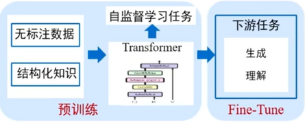

目录 #
Overview #
{% asset_img ’’ %}

多模态预训练 #
数据集 #
- 大规模无标注
- 内容杂 噪音多
架构Transformer #
-
基于transformer encoder-理解任务 单流 - vl-bert UNITER 双流 - ViLBERT， CLIP（双流结构，对比学习）
-
基于transformer decoder-生成任务 DALL-E （VQVAE+GPT, Text-to-Image Generation） 现在都用 → SD 扩散模型
-
基于encoder+decoder-理解+生成 文本的decoder
- encoder + decoder 串行, 交叉注意力
- encoder + decoder 并行
模型 - 自监督学习 #
-
模态内掩码学习 文本 语音 视觉自身token级别mask
-
模态间掩码学习 不同模态信息的相互预测 mask视觉， 输出对应文本
-
模态间匹配学习 匹配与否的分类问题 - 正负样本(二分类) 对比学习 - 模态间的图文匹配对
下游任务 #
多模态下游任务-模型微调 #
-
模型微调
- p+ finetune（全参数）
- p+ prompt-tuning
- p+ adaptor-tuning
- p+ lora
-
多模态下游任务
- 理解： text/audio/visual 内容生成
- 生成： 跨模态 检索/问答/推理
更大更强的多模态预训练模型 #
- 强大的语言模型
- 更大的视觉模型
- 更大规模的预训练数据
- 更多模态形式的数据